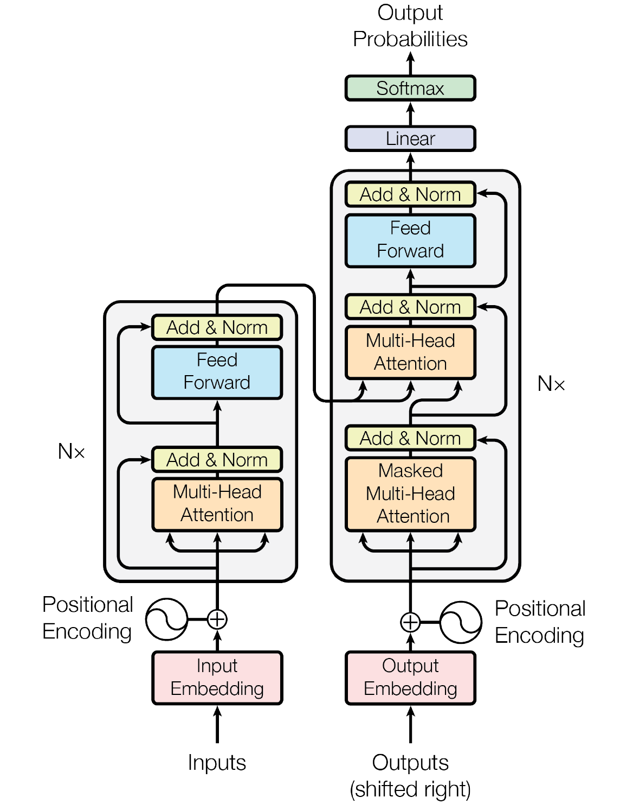

The Transformer architecture was first introduced in 2017 by a team of researchers at Google (cf. Vaswani et al., 2017). Originally, their model was developed for machine translation, i.e., the automated translation of text across different languages. However, researchers soon realized that Transformer-based models significantly outperform traditional machine learning models in almost all areas (exceptions include: random forest regression for a classification task using tabular data and logit regression for the prediction of tsunamis). Today almost all state-of-the-art generative models, such as OpenAI's GPT-4o, Meta AI's LLaMA 3.1, Google's Gemini 1.5, and Anthropic's Claude 3.5, are based on the Transformer architecture. To get a better understanding of what goes on behind these and other Transformer-based models, I will explain (some) of the math behind the Transformer. This blog post will cover (scaled) dot-product self-attention, (masked) multi-head self-attention, layer normalization, feed forward neural network, linear layer, softmax function, and positional encoding.

Figure 1: The Transformer architecture (Vaswani et al., 2017)
The dot-product self-attention mechanism is a curcial component that enables a Transformer model the importance of different elements in a sequence relative to each other. The mechanism relies on three key components: queries \(Q\), keys \(K\), and values \(V\), which are derived from the input sequence. Queries represent what each token is "looking for" in other tokens, keys represent the features of the tokens that will be matched with the queries, and values hold the information that will be aggregated and passed on to the next layer based on the attention weights.
To obtain these components, each input token undergoes a linear transformation, a process in which the input vector is multiplied by a learned weight matrix. A learned weight matrix is a matrix of parameters that is initialized randomly and then updated during the training process. These parameters are "learned" by the model through backpropagation, where the model adjusts the weights to minimize the error between its predictions and the true outputs.
Formally, for each token, the query \(Q\), key \(K\), and value \(V\) are computed as:
$$Q=XW^{(q)}$$ $$K=XW^{(k)}$$ $$V=XW^{(v)}$$where
These transformations allow the model to project the input into different vector spaces to perform attention calculations. Note that in some texbooks, for example in Prince (2024), a bias term \(\beta\) is included, making the formulas:
$$Q = \beta_q1^T+\Omega_qX$$ $$K = \beta_k1^T+\Omega_kX$$ $$V = \beta_v1^T+\Omega_vX$$where \(\beta_q, \beta_k, \beta_v\) are the biases, \(1^T\) is a \(N \times 1\) vector of ones that ensures the first term can be added to the second term, and \(\Omega_q, \Omega_k, \Omega_v\) are the learned weight matrices.
Once we have obtained the queries, keys, and values, the (scaled) dot-product self-attention can be computed as follows:
The first step in the self-attention process is to compute the dot-product between the query and key matrices. Each query vector \(Q_i\) is compared to every key vector \(K_j\) to measure the similarity between tokens. This results in an attention score matrix \(QK^T \in \mathbb{R}^{N \times N}\), where each entry \((i,j)\) in the matrix represents how much attention the \(i\)-th token should pay to the \(j\)-th token. This similarity is crucial because it tells the model which tokens in the sequence are most relevant to each other.
The second step is scaling the attention scores by dividing them by \(\sqrt {d_k}\), where \(d_k\) is the dimensionality of the key vectors. This is formally expressed as:
$$\frac{QK^T}{\sqrt{d_k}}$$This scaling is necessary because as the dimensionality \(d_k\) grows, the dot-product values can become large, which can lead to gradients that are too sharp and make training unstable. By scaling the scores, the values remain within a range that makes the softmax function more effective in differentiating the attention between tokens, leading to smoother learning.
Next, the softmax function is applied to the scaled attention scores to convert them into attention weights \(\text{a}_{ij}\). Mathematically, this can be expressed as:
$$\text{a}_{ij} = \frac{\exp\left(\frac{(QK^T)_{ij}}{\sqrt{d_k}}\right)}{\sum_{j=1}^{n} \exp\left(\frac{(QK^T)_{ij}}{\sqrt{d_k}}\right)}$$It ensures that the attention weights are normalized — each row of the matrix sums to 1 — so that they can be interpreted as probabilities. This tells the model how much focus the \(i\)-th token should place on each of the other tokens \(j\) in the sequence. The softmax function emphasizes the most relevant tokens (those with higher scores) while reducing the influence of less relevant tokens.
Finally, the attention weights are used to compute a weighted sum of the value vectors. The attention weights are applied to the values \(V\), and the sum of these weighted values produces the output for each token:
$$\left(\frac{QK^T}{\sqrt{d_k}}\right)V$$This step is what allows the model to aggregate information from the entire sequence, with each token focusing on the most relevant tokens (based on the computed attention weights) to form its representation. This weighted aggregation is key to the model's ability to capture long-range dependencies and contextual information across the input sequence.
Taking everything together, we obtain the following formula for computing scaled dot-product self-attention:
Algorithmically, scaled dot-product self-attention can be expressed as (cf. Bishop & Bishop, 2024, p. 367):
Algorithm 1: Scaled dot-product self-attention
\(\text{Attention}(Q, K, V)\):
Input:
Output: \(\text{Attention}(Q, K, V)\in \mathbb{R}^{N \times d_v} : \{y_1, ..., y_N\} \)
\(Q = XW^{(q)}\) // compute queries \(Q \in \mathbb{R}^{N \times d_k}\)
\(K = XW^{(k)}\) // compute keys \(K \in \mathbb{R}^{N \times d_k}\)
\(V = XW^{(v)}\) // compute values \(V \in \mathbb{R}^{N \times d_v}\)
return \(\text{Attention}(Q, K, V) = \text{softmax}\left(\frac{QK^T}{\sqrt{d_k}}\right)V\)
In natural language, some patterns might be relevant to tense whereas others might be associated with vocabulary. Using a single attention head can lead to averaging over these effects and therefore imprecise results. To avoid this, we can use multiple self-attention mechanisms in parallel, each with its own set of learnable parameters that control the computatin of the query, key, and value matrices. This is analogous to using multiple different filters in each layer of a convolutional network.
For a multi-head self-attention mechanism with \(H\) heads indexed by \(h = 1, ..., H\), the query, key, and value matrices can be calculated using:
$$Q_h = XW^{(q)}_h$$ $$K_h = XW^{(k)}_h$$ $$V_h = XW^{(v)}_h$$or with the bias terms:
$$Q_h = \beta_{qh}1^T+\Omega_{qh}X$$ $$K_h = \beta_{kh}1^T+\Omega_{kh}X$$ $$V_h = \beta_{vh}1^T+\Omega_{vh}X$$The \(h\)-th head can then be written as:
$$H_h = \text{Attention}(Q_h, K_h, V_h)$$Finally, the matrices \(H_1, ..., H_H\) are concatenated into a single matrix and the result is linearly transformed using a matrix \(W^{(o)}\) to obtain the final result:
$$Y = \text{Concat}(H_1, ..., H_H)W^{(o)}$$Algorithmically, multi-head self-attention can be written as (cf. Bishop & Bishop, 2024, p. 368):
Algorithm 2: Multi-head self-attention
\(\text{MultiHead}(Q, K, V)\):
Input:
Output: \(Y \in \mathbb{R}^{N \times d_k} : \{y_1, ..., y_N\} \)
// compute self-attention for each head
for \(h = 1, ..., H\) do
\(Q_h = XW^{(q)}_h, \quad K_h = XW^{(k)}_h, \quad V_h = XW^{(v)}_h\)
\(H_h = \text{Attention}(Q_h, K_h, V_h)\) // \(H_h \in \mathbb{R}^{N \times d_v}\)
end for
\(H = \text{Concat}(H_1, ..., H_N)\) // concatenate heads
return \(Y = HW^{(o)}\)
Cross-attention refers to a variation of the self-attention mechanism, where the output of the encoder is used in the decoder. Specifically, the query matrix \(Q\) comes from the decoder, while the key matrix \(K\) and the value matrix \(V\) come from the encoder. Mathematically, this can be expressed as:
where the superscript \('\) refers to matrices from the encoder. This mechanism allows the decoder to leverage the contextualized representations learned by the encoder, facilitating more informed and accurate generation of outputs, such as translations or summaries.
Residual connections or skip connections, introduced by He et al. (2016), are shortcuts that bypass a given sublayer and add the input of a sublayer to its output, which helps prevent the loss of information in deeper layers and ensures that the model can continue to learn effectively even as the depth increases. They applied around each multi-head attention sublayer and feed-forward network. Mathematically, residual connections can be expressed as:
$$Z = Y + X$$where \(Y\) is the output of a given sublayer (e.g., of the multi-head self-attention layer or the feed-forward neural network) and \(X\) is the original input matrix.
Layer normalization, introduced by Ba et al. (2016), is a technique for normalizing each data sample across the the feature dimension \(D\). It improves training efficiency by fixing the mean and the variance of the summed inputs within each layer, which reduces the "covariate shift problem". For a given input vector \(X = \{x_1, ..., x_D\}\), where \(D\) is the number of hidden units or features, layer normalization computes the empirical mean \(\mu\) and variance \(\sigma^2\) for each input:
The input is then transformed as follows:
$$z_{ni} = \frac{x_{ni} - \mu_n}{\sqrt{\sigma^2_n + \epsilon}}$$This standardization is analogous to the z-standardization in statistics. Finally, the normalized variable is scaled by \(\gamma\) and shifted by \(\delta\):
$$y_{ni} = \gamma z_{ni} + \delta$$The "Add & Norm" sublayer can then be written as:
$$Z = \text{LayerNorm}(Y + X)$$The position-wise feed-forward neural network (FFNN) in the Transformer consists of two linear layers with a non-linear activation function, ReLU, between them. The FFNN can be written as:
$$\text{FFNN}(X) = \text{max}(0, XW_1 + b_1)W_2 + b_2$$ where:The FFNN is applied to the output of the "Add & Norm" sublayer:
$$\tilde{X} = \text{LayerNorm}(\text{MLP}(Z) + Z)$$Algorithmically, the transformer layer (multi-head self-attention, add & norm, FFNN) can be expressed as (cf. Bishop & Bishop, 2024, p. 367):
Algorithm 3: Transformer layer
\(\text{TransformLayer}(Y)\):
Input:
Output: \(\tilde{X} \in \mathbb{R}^{N \times D} : \{\tilde{x}_1, ..., \tilde{x}_N\}\)
\(Z = \text{LayerNorm(Y + X)}\)
\(\tilde{X} = \text{LayerNorm}(\text{MLP}(Z) + Z)\)
return \(\tilde{X}\)
A linear layer or fully connected layer applies a learned linear transformation to the input. It changes the dimensionality of the output from the previous layer to project the model's hidden representations to a vocabulary space \(V\), thereby preparing the hidden states for the softmax layer. The linear transformation can be defined as:
$$\tilde{Y} = \tilde{X}W + b$$where \(\tilde{X} \in \mathbb{R}^{N \times D}\) is the output from the previous sublayer, \(W \in \mathbb{R}^{D \times V}\) is the learned weight matrix that defines how the input is transformed, and \(b \in \mathbb{R}^V\) is the bias vector.
As a final step in the transformer architecture, a softmax activation function is applied to the output of the linear layer to convert the raw scores into probabilities. The softmax function is defined as:
$$P(y_i = v | \tilde{Y}_i) = \frac{\exp(\tilde{Y}_{i,v})}{\sum_{v' \in V}\exp(\tilde{Y}_{i, v'})}$$where \( P(y_i = v | \tilde{Y}_i) \) is the probability that the model predicts the \( i \)-th token to be word \( v \) from the vocabulary \( V \), and \( \tilde{Y}_{i,v} \) is the output score for word \( v \) from the linear layer at the \( i \)-th position in the sequence. The softmax function exponentiates these scores and normalizes them by dividing by the sum of the exponentiated scores over the entire vocabulary, ensuring that the resulting probabilities sum to 1. This allows the model to output a probability distribution across all possible vocabulary tokens, with higher scores corresponding to higher probabilities of the predicted word being correct.
In the transformer architecture, the matrices \(W^{(q)}_h\), \(W^{(k)}_h\), and \(W^{(v)}_h\) are shared across all input tokens, as is the subsequent neural network. As a result, the transformer exhibits the property that permuting the order of the input tokens, i.e., rearranging the rows of the input matrix \(X\), leads to the same permutation in the rows of the output matrix \(\tilde{X}\) (see Algorithm 3). This means that a transformer is equivariant with respect to input permutations, which allows for efficient, massively parallel processing and enables the model to learn long-range dependencies as effectively as short-range ones. However, this independence from token order poses a challenge when dealing with sequential data like natural language, where the meaning of a sentence can drastically change with different word orders. For example, the sentences “The food was bad, not good at all” and “The food was good, not bad at all” contain the same tokens but convey very different meanings. Thus, to overcome this limitation and account for the importance of word order in sequential tasks, the transformer architecture incorporates positional encoding to inject token order information into the model. Positional encodings allow the transformer to differentiate between tokens based on their position in the sequence, ensuring that the model can capture both the content and the relative order of words. We will therefore construct a position encoding vector \(r_n\) associated with each input position \(n\) and then combine this vector with the associated input token embedding \(x_n\) by adding them:
$$\tilde{x}_n = x_n + r_n$$Note that this requires that \(r_n\) and \(x_n\) have the same dimensionality.
Bishop & Bishop (2024, p. 372) have stated that “[a]n ideal positional encoding should provide a unique representation for each position, it should be bounded, it should generalize to longer sequences, and it should have a consistent way to express the number of steps between any two input vectors irrespective of their absolute position because the relative position of tokens is often more important than the absolute position”.
However, many approaches to positional encoding exist (Dufter et al., 2022). Here I will describe a technique based on sinusoidal functions used in Vaswani et al. (2017). For a given position \(n\) the components of the positional-encoding vector \(r_{ni}\) are given by:
$$ r_{ni} = \left\{ \begin{array}{ll} \text{sin}(\frac{n}{T^{i/D}}) & \text{if } i \text{ is even}, \\ \text{cos}(\frac{n}{T^{(i-1)/D}}) & \text{if } i \text{ is odd}, \end{array} \right. $$where \(i\) is the position of a token and \(T\) is \(10^4\) (cf. Vaswani et al., 2017).
In this blog post, I outlined the math behind the Transformer and its individual components. It should be noted that this blog post only provides a high-level overview and that most (if not all) of today's Transformer-based models solely use the decoder (the right side in Figure 1). Although state-of-the-art NLG models are based on Vaswani et al. (2017)'s Transformer, most of them have different variants of the components presented in this blog post (pre-normalization, SwiGLU activation function). If you want more information, you can check out Bishop (2006), Deisenroth et al. (2020), Fleuret (2023), Prince (2024), and Bishop & Bishop (2024). Additionally, the blog post by Jay Alammar found here is great for understanding the linear algebra used in Transformers.